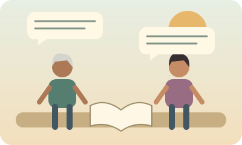
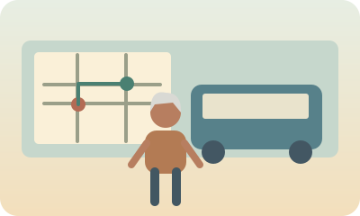
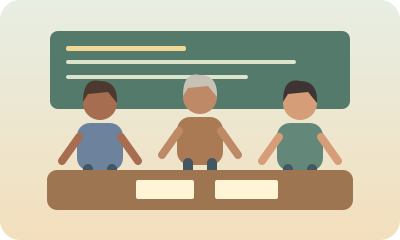
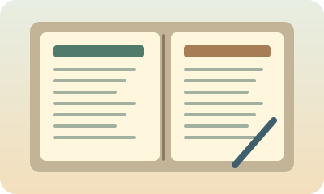
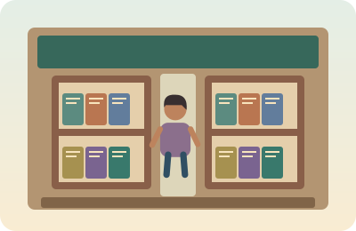

नींव
FoundationFirst sounds, script, essential needs and polite requests.
No previous Hindi required.
Open stage →Learn Hindi for real conversations, travel, family, work and independent expression. Start at your skill level, not your age.

Saved on this device only.
Independent self-study, not a formal qualification. Hindi speech uses a device Hindi voice when available. Tap A+ for larger text, EN for translation assistance. Material is a draft pending fluent-speaker review.
First sounds, script, essential needs and polite requests.
No previous Hindi required.
Open stage →
STAGE 02Family, food, shopping, travel, health and daily life.
Know the script basics, numbers and common requests or use the Foundation stage.
Open stage →
STAGE 03Past and future, opinions, comparisons and practical communication.
Handle everyday exchanges and read simple Hindi sentences.
Open stage →
STAGE 04Register, complex sentences, reasoning and formal communication.
Describe experiences and plans, understand a short passage and give reasons.
Open stage →Independent reading, translation, professional communication and research.
Understand extended passages, organize arguments and write connected Hindi.
Open stage → 01
01 02
02 03
03 04
04 05
05 06
06 07
07 0809
0809 10
10 11
11 12
12 13
13 1415
1415 16
16 17181920
17181920 212223
212223 242526
242526 2728
2728 293031
293031 32
32 33
33 34
34
35 36
36 3738
3738 39
39 40
40Prefer the school-style pathway? Return to all Hindi textbooks. All stages are open, no age gate or account.